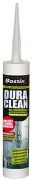

Санитарный герметик Дюраклин MS
Бостик Дюраклин MS - однокомпонентный гибридный санитарный герметик на основе MS-полимера с защитой от грибков и плесени - один из лучших на сегодняшний день санитарных герметиков.

Санитарный герметик Дюраклин MS используется для герметизации швов в санитарных помещениях и в душевых, в помещениях плавательных бассейнов (например, прилегающие к чаше бассейна дорожки, душевые, сауны, процедурные помещения), для герметизации окон, дверей, крыш и т.д., а также для герметизации деревянных и металлических конструкций, для заделки стыков и деформационных швов для внутренних и наружных работ.Преимущества санитарного герметика Дюраклин:
- имеет фунгицидные и антибактериальные добавки;
- надолго предотвращает образование плесени;
- сочетает преимущества силикона и полиуретана;
- не содержит изоцианата и растворителей, без запаха;
- отвердевает от влаги воздуха в эластичный резиноподобный материал;
- после отвердевания водонепроницаем;
- имеет высокую адгезионную прочность и отличную адгезию к широкому спектру материалов;
- хорошо заглаживается;
- ремонтопригоден;
- температурная устойчивость от -40оС до +80оС;
- инертный, не пачкает и не окисляет поверхности, не оставляет жирных пятен;
- не корродирует и не изменяет цвет герметизируемых поверхностей;
- не образует пузырей при нанесении;
- практически не имеет усадки;
- устойчив к УФ излучению;
- можно использовать для природного камня;
- прилипает к сухому и влажному основанию;
- испытан в соответствии с DIN EN ISO 846 A/B;
- разрешён к применению в установках вентиляции и кондиционирования согласно VDI 6022.
Основные характеристики Бостик Дюраклин
| Удельный вес | 1,35 г/см3 |
| Твердость по Шору | 35 |
| Время полимеризации верхнего слоя (образование пленки) | 15-25 мин. при +230С/50% о.в. |
| Время полной полимеризации | 2 - 3 мм / 24 часа при +230С/50% о.в. |
| Максимальная допустимая деформация | 25%, относительно наружной ширины шва |
| Температура поверхности при нанесении | от +5оС до +40оС (температура основания) |
| Хранить в сухом и прохладном месте | при температуре от +5оС до +25оС |
Санитарный герметик Дюраклин MS можно наносить без грунтовки, на керамическую плитку, анодированный алюминий, твёрдый ПВХ, эмалированную сталь, полистирол, макролон и т.д. Для пористых и впитывающих оснований следует применять грунтовку Бостик 5075 MS. При работе с природным и искусственным камнем желательно провести предварительные пробные испытания.
Прилипание и сочетаемость с пластмассами должны проверяться в каждом конкретном случае. Предварительную проверку необходимо также проводить и при нанесении герметика на поверхности с ранее наложенными покрытиями (напр., водоотталкивающие фасады, обработанные гидрофобизаторами).
Поверхности швов (поверхности сцепления), которые подлежат заполнению, должны быть прочными, сухими, чистыми, очищенными от масел и пыли. Материалы основания не должны содержать ни битумов, ни гудрона ни маслосодержащих материалов. Конфигурация шва должна соответствовать стандарту DIN 18540 - треугольные швы не допускаются. Предварительно уложенный пенополиэтиленовый шнур препятствует прилипанию санитарного герметика Дюраклин MS к основанию шва. Если шов предварительно заполняется какими-либо иными материалами, то они должны сочетаться с санитарным герметиком Дюраклин MS. Края швов рекомендуется оклеить клейкой лентой.
Далее, следует равномерно выдавить санитарный герметик Дюраклин MS в имеющийся шов или стык. Для выдавливания применяют специальные ручные пистолеты под полиэтиленовый картридж на 300 мл. При заполнении швов нужно стремиться не оставлять воздушных пузырей. Вскрытую емкость следует как можно скорее израсходовать. Поверхность подровнять при помощи слегка увлажненного мастерка, расшивки и т.п. После этого следует удалить клейкую ленту. Можно применять бытовые смачивающие вещества (не допускается использование концентрированных средств). Во избежание изменения цвета герметика и граничащей с ним поверхности применять бытовые смачивающие вещества и другие добавки следует в очень малых количествах.